Baik Anda menggunakan pena digital, layar sentuh, atau mouse, fitur menggambar di Office dapat membantu Anda menambahkan catatan, membuat bentuk, mengedit teks, dan banyak lagi. The tab Menggambar tersedia dalam Firman, Excel, dan PowerPoint.
Sebagian besar fitur yang disebutkan di bawah ini tersedia di Office 365 dan Office 2019, meskipun beberapa di antaranya hanya tersedia di Office 365.
Tonton video di bawah ini untuk mempelajari lebih lanjut tentang menggunakan tab Gambar.
Menambahkan tab Gambar ke Pita
Tab Draw biasanya ditemukan di Ribbon. Namun, jika Anda tidak melihatnya, berikut cara menambahkannya.
Klik kanan Ribbon dan pilih Customize the Ribbon.
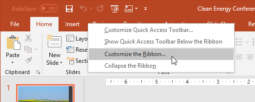
Centang kotak di sebelah Draw, lalu klik OK.
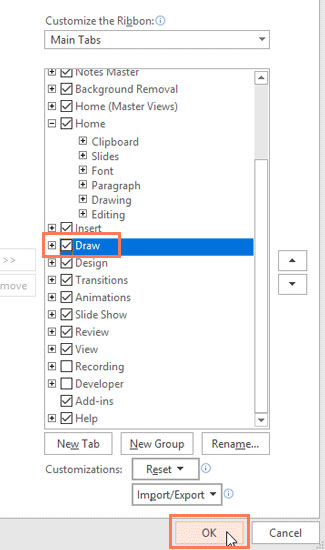
Tab Draw sekarang akan tersedia di Ribbon.
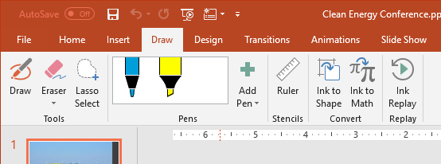
Apa yang bisa dilakukan tab Gambar?
Tab Gambar menawarkan tiga jenis tekstur gambar: pena, pensil, dan penyorot, masing-masing dengan tampilan berbeda. Untuk memilih satu, cukup klik dan Anda siap untuk mulai menggambar.
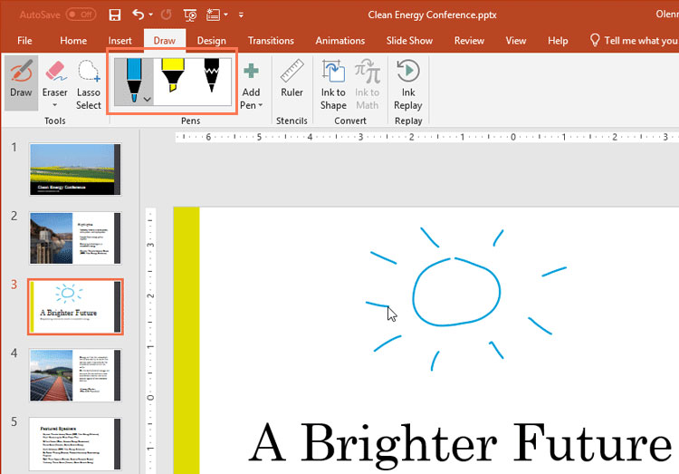
Jika Anda ingin mengubah warna atau ketebalannya, klik panah tarik-turun di samping pena dan pilih preferensi Anda. Setelah selesai, klik dari menu untuk melanjutkan menggambar.
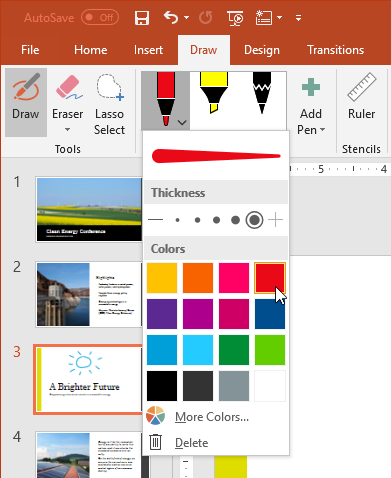
Fitur lanjutan
Saat Anda menggambar bentuk dengan tangan, mungkin sulit untuk menggambarnya dengan sempurna. Untungnya, alat Ink to Shape dapat membantu dalam hal ini. Cukup klik Ink to Shape, lalu gambar bentuk pilihan Anda.
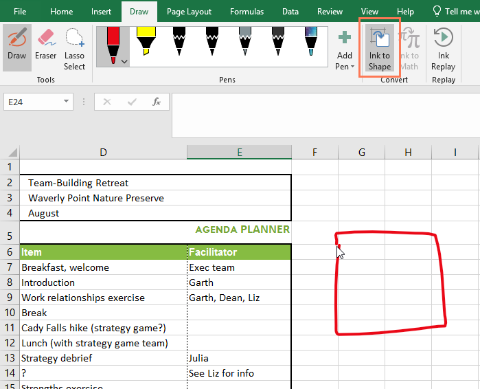
Fitur Ink to Shape kemudian akan mencari tahu jenis bentuk apa yang telah Anda gambar dan memperbaiki ketidaksempurnaan agar terlihat lebih halus.
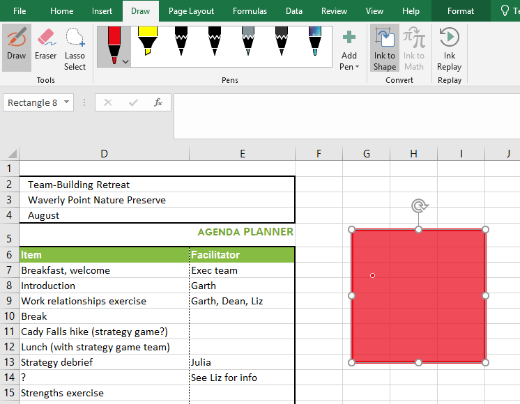
Selain bentuk, Anda dapat menulis persamaan matematika yang rumit dengan alat Ink to Math. Saat Anda menulis persamaan, alat membaca apa yang Anda tulis dan menerjemahkannya ke dalam persamaan yang diformat dengan benar.
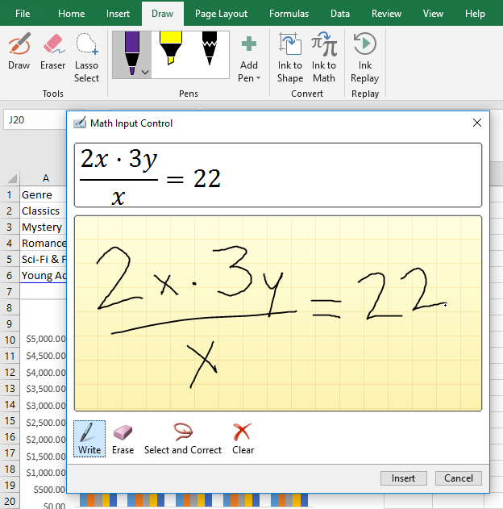
Word juga memiliki fitur menggambar eksklusif yang disebut Ink Editor. Anda dapat melingkari teks untuk memilihnya, mencoret teks untuk menghapusnya, dan banyak lagi. Fitur ini hanya tersedia dengan Office 365, bukan Office 2019.
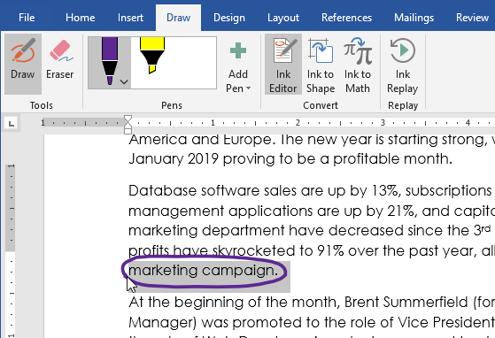
Fitur menggambar ini memberi Anda lebih banyak opsi untuk menyesuaikan proyek dan mempermudah penggunaan Office di tablet dan layar sentuh.
Jika Anda membutuhkan grafik untuk sebuah proyek, ada fitur yang dapat Anda gunakan bernama icons. Ikon adalah pustaka grafis modern dan profesional yang disertakan dengan Office 365 dan 2019, dan dapat dikustomisasi agar sesuai dengan kebutuhan Anda. Ikon tersedia di Word, Excel, Outlook, dan PowerPoint.
Tonton video di bawah ini untuk mempelajari lebih lanjut tentang ikon.
Memasukkan ikon
Untuk menyisipkan ikon, klik tab Sisipkan, lalu pilih Ikon.
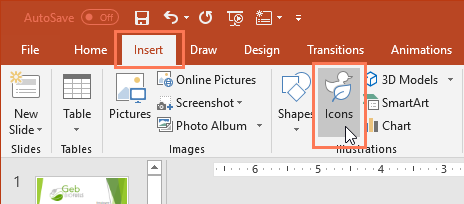
Menu Sisipkan Ikon akan muncul. Anda dapat menelusuri berbagai subjek, termasuk orang, teknologi, perdagangan, seni, dan banyak lagi. Setelah Anda menemukan ikon yang Anda suka, pilih dan klik Sisipkan.
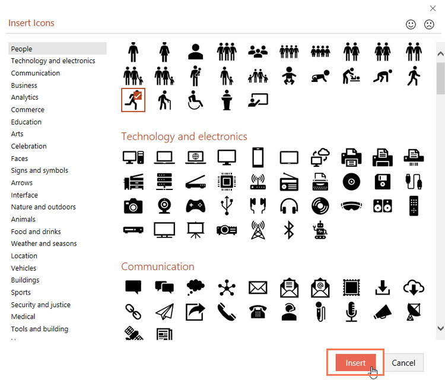
Menyesuaikan ikon
Setelah menyisipkan ikon, ada beberapa cara berbeda untuk menyesuaikannya.
Untuk mengubah warna ikon, pilih ikon yang ingin Anda edit. The Format tab akan muncul. Kemudian klik Graphics Fill dan pilih warna dari menu drop-down.
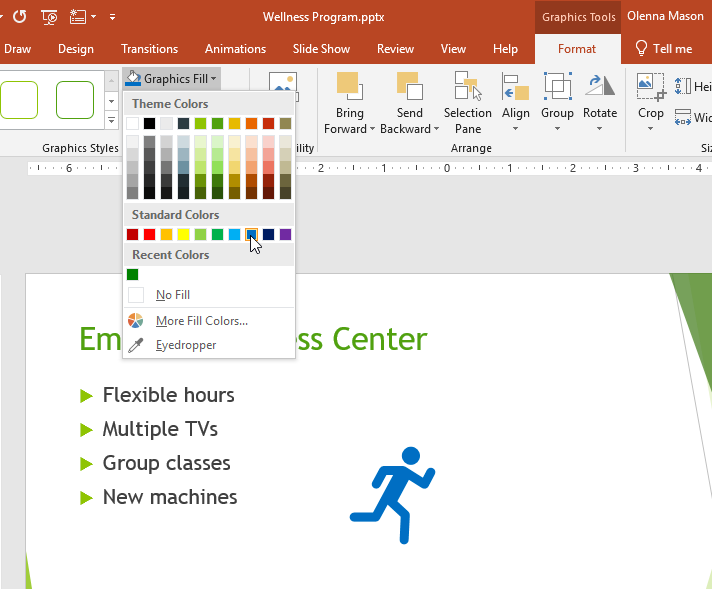
Untuk menambahkan garis besar ke ikon Anda, klik Garis Besar Bentuk dan pilih warna dari menu tarik-turun.
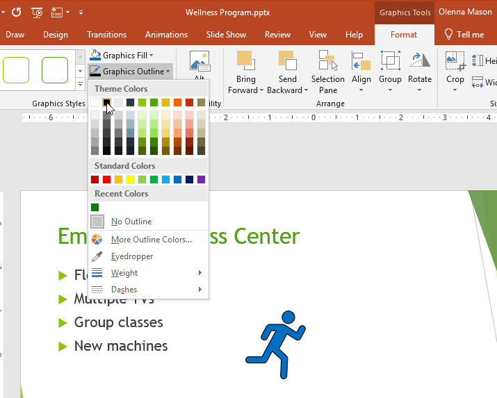
Anda juga dapat mengubah ukuran ikon dengan mengambil salah satu gagang pengatur ukuran dan menyeretnya. Karena itu adalah grafik vektor, Anda dapat membuat ikon sebesar yang Anda inginkan tanpa terlihat berpiksel.
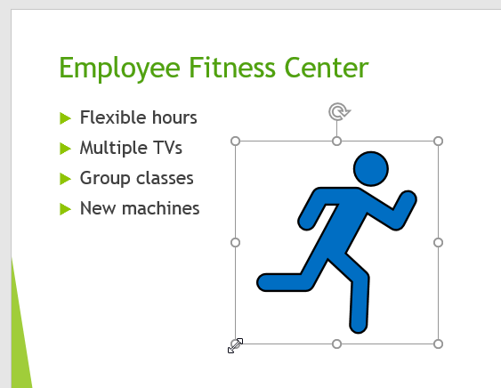
Memecah ikon menjadi beberapa bagian
Beberapa ikon dapat dipecah menjadi bagian-bagian terpisah, memungkinkan Anda untuk mengedit masing-masing ikon satu per satu untuk penyesuaian lebih lanjut.
Klik kanan ikon dan pilih Convert to Shape.
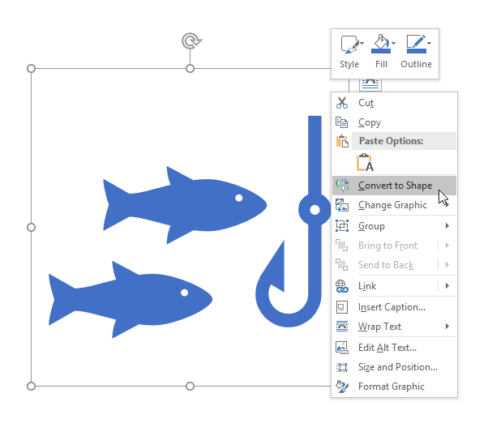
Klik Ya di kotak dialog.
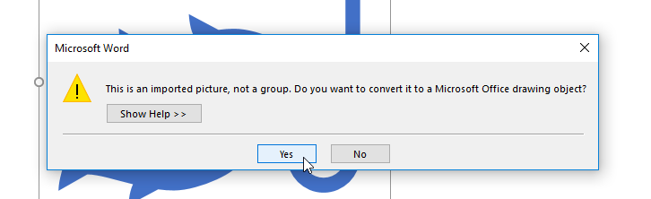
Jika ikon Anda memiliki bagian individual, Anda sekarang dapat mengedit setiap bagian dengan sendirinya, mengubah ukuran, warna, dan lokasinya.
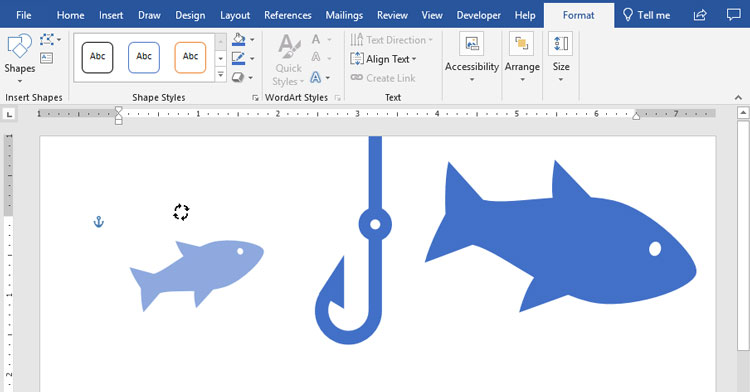
Ikon menawarkan banyak kemungkinan untuk menyesuaikan tampilan proyek Anda. Cobalah jika Anda mencari beberapa visual sederhana yang dipoles untuk menyempurnakan konten Anda.